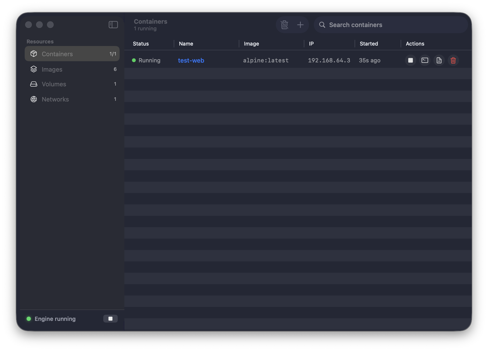

Docker Desktop-style GUI for Apple's container CLI.
Manage containers, images, volumes and networks — live logs, one-click engine control, zero terminal gymnastics.

Follows logs --follow in real time with auto-scroll. Info grid and pretty-printed inspect JSON one tab away.
Start and stop the container system service from the sidebar. Status light tells you what's running at a glance.
Polls every 3 seconds. Start a container from any terminal — it shows up here before you can ⌘-Tab back.
Ports, volumes, env vars, CPU and memory limits, --rm — a proper form instead of a 200-char command.
Pull with one-tap suggestions, prune unused layers, or spin a container straight from any local image.
Opens exec -it in Terminal.app for any running container. Volumes and networks managed in-app too.
Grab the DMG, drag ContainerDesk into Applications. Done.
⬇ ContainerDesk-1.0.1.dmgSigned & notarized by Apple — no Gatekeeper warnings, just drag and go.
requires container CLI (github.com/apple/container) · macOS 15 or later